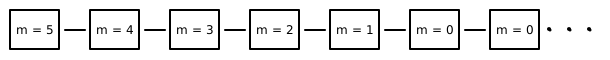
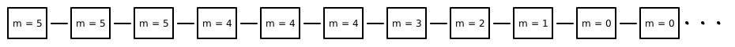
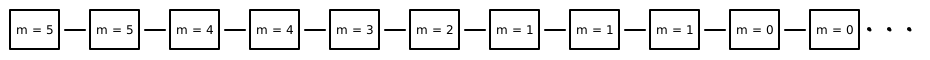
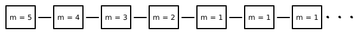
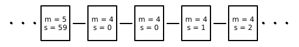
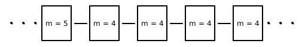

Let’s say you want to specify Timer in TLA+ which counts down 5 minutes of time.
---------------------------------MODULE TIMER --------------------------------------
EXTENDS Naturals
VARIABLE minutes
CHECK == minutes \in (0..5)
INIT == minutes = 5
NEXT == IF minutes > 0
THEN minutes' = minutes - 1
ELSE minutes' = minutes
SPEC == INIT /\ [][NEXT]_<<minutes>>
====================================================================================
Code listed above shows TLA+ specification for the same, assuming you want minutes to decrease by 1 in single step until it reaches 0. Ideally you want SPEC to be INIT /\ []NEXT representing system behavior as shown in figure.

But alas TLA+ doesn’t allow it. It requires you to account for stuttering steps which forces you to change SPEC to INIT /\ [][NEXT]_<<minutes>>. Some of system behavior satisfying SPEC is shown below.
 
Next you want to check temporal formula (property) that eventually minutes will be 0 always. You add PROP == <>[](minutes = 0) (<>[] means eventually always) to module and proceed to model check. TLA+ model checker points out that temporal formula is not satisfiable and gives counterexample system behavior - which stutters infinitely after counting down to 1.

We will look into how to avoid this but for now let’s explore why stuttering steps are enforced in TLA+.
TLA+ makes it easy to specify systems hierarchically. Suppose we have hierarchy of specifications S1, S2, … , Sn of a system where S1 is high level specification and Sn is low level specification. To connect between them we need to verify that Sn is correct implementation (low level details) of high level specification S1. This is done by showing that S2 is refinement of S1, S3 is refinement of S2 so on.
Let’s look at concept of refinement through an example. Suppose you implemented Timer counting seconds.
-------------------------------- MODULE TIMER2 -------------------------------------
EXTENDS Naturals
VARIABLE minutes, seconds
CHECK == /\ /\ seconds \in (0..59)
/\ minutes \in (0..5)
/\ minutes = 0 => seconds = 0
INIT == minutes = 5 /\ seconds = 0
DECRMINUTES ==
/\ seconds = 59
/\ minutes' = minutes - 1
/\ seconds' = 0
INCRSECONDS ==
/\ minutes > 0
/\ seconds < 59
/\ seconds' = seconds + 1
/\ minutes' = minutes
NEXT == \/ DECRMINUTES
\/ INCRSECONDS
\/ /\ minutes = 0
/\ minutes' = minutes
/\ seconds' = seconds
SPEC == INIT /\ [][NEXT]_<<minutes, seconds>>
====================================================================================To verify that TIMER2 is refinement of TIMER we add following definition in TIMER2 module and model check that SPECIFICAION SPEC implies PROPERTY RSPEC.
RTIMER == INSTANCE TIMER
RSPEC == RTIMER!SPECTLA+ model checker validates refinement as success. Part of why refinement worked out without any ceremony is TLA+ insisted about stuttering steps in high level specification. Through refinement we want to show that for every system behavior of TIMER2 there is corresponding system behavior of TIMER which can be shown by converting INCRSECONDS to stuttering steps of high level specification and hiding state of seconds (see illustrations).
 
We say that system behaves not as specified by INIT /\ [][NEXT]_<<minutes>> but with a modification - there can be finite but arbitrary large number of stuttering steps. WF_minutes(NEXT) is one of ways of enforcing this - It is always case that if NEXT is enabled (system can take NEXT step) forever then NEXT must eventually happen.
We change system specification to SPEC == INIT /\ [][NEXT]_<<minutes>> /\ WF_minutes(NEXT) and model check PROP again. This time it succeeds.